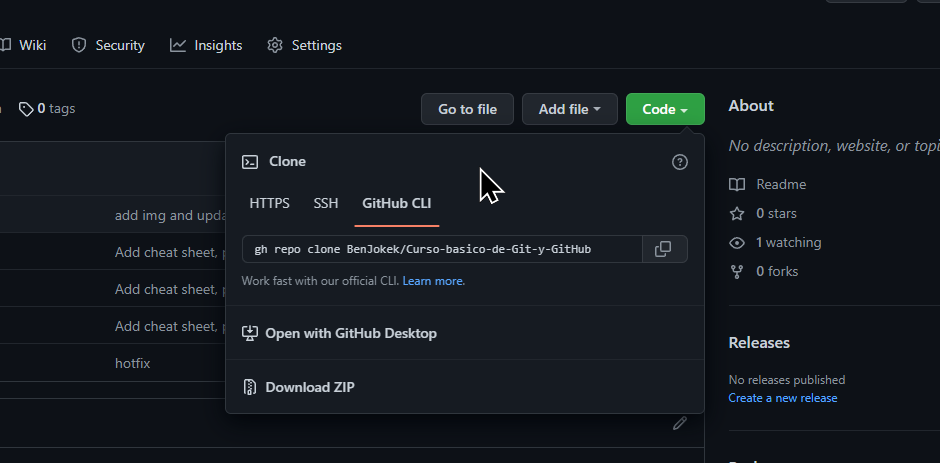

Repositorios Remotos y Contraseñas
Cuando vas a trabajar con un repositorio remoto puedes elegir entre 3 opciones:
HTTPS URL
Cuando ejecutes git clone, git fetch,
git pull o git push en un repositorio
remoto mediante URL HTTPS en la línea de comando, Git te pedirá tu
nombre de usuario y contraseña de GitHub. Cuando Git te solicite tu
contraseña, debes ingresar tu
token de acceso personal.
SSH URL
(SSH info) este método es el más complicado para novatos. Es un método importante a veces porque, por ejemplo, es la forma en que el código se distribuye y se envía a los servidores de producción, como la implementación en Heroku. Aquí vas a usar tu constraseña SSH en lugar de usuario/contraseña de GitHub. Cada vez que requieras usar este método deberías recurrir a la documentación de GitHub.
Cuando le haces git clone, git fetch,
git pull o git push a un repositorio
remoto utilizando SSH URL, te solicitarán la contraseña de tu clave
SSH. Cuando configures SSH, deberás generar una llave privada y
agregarla al ssh-agent. También debes agregar la llave pública a tu
cuenta en GitHub antes de usar la clave. Para mantener la seguridad
de la cuenta, puedes revisar regularmente tu lista de claves SSH y
revocar cualquier clave que no sea válida o que haya sido
comprometida. Si no has usado tu clave SSH durante un año, GitHub
eliminará automáticamente tu clave SSH inactiva como medida de
seguridad. Cuando generas una clave SSH, puedes agregar una
contraseña para proteger aún más la clave. Cada vez que uses este
método, debes ingresar la contraseña. Si no deseas ingresar la
contraseña cada vez, puedes agregar tu clave al ssh-agent el cual
administra tus claves SSH y recuerda tu contraseña.
Si configuras por primera vez SSH sigue estos resumidos pasos (si tienes problemas recurre a la documentación de GitHub que marqué):
- Abres Git Bash
- Escribes el siguiente comando (reemplaza tu email real de GitHub):
- Das enter aceptando la ubicación por defecto (si es que no deseas cambiarla)
- Ingresas una contraseña(opcional pero recomendado)
ssh-keygen -t ed25519 -C "your_email@example.com"
Configuración del ssh-agent (opcional):
- Asegurate de que el ssh-agent se esté ejecutando (puede usar las instrucciones de "Inicio automático del ssh-agent" o iniciarlo manualmente como te muestro a continuación):
- Agregas tu llave privada al ssh-agent:
eval "$(ssh-agent -s)"
ssh-add ~/.ssh/id_ed25519
La virgulilla(~) te lleva a tu carpeta home, luego "/" te dirige a la .ssh (la carpeta escondida con tus llaves) y finalmente "id_ed25519" es el archivo que contiene tu llave privada (no la compartas nunca).
Finalmente vas a agregar tu llave pública a tu cuenta de GitHub. Simplemente dirígete a la configuración de GitHub y ahí buscas "SSH and GPG keys". Puede que te preguntes dónde está esa clave pública. ¿Recuerdas cuando introdujiste el primer comando que te creó un par de llaves y las guardo en una ubicación predeterminada (suponiendo que elegiste esa ubicación "predeterminada")? Probablemente se vea algo así /c/Users/"TU USUARIO"/.ssh/id_ed25519.pub , tienes que ir a esa ubicación y "abrir con" bloc de notas el que tiene la extensión ".pub" que es tu llave pública. La otra es tu llave privada la cual NO DEBES COMPARTIR. Entonces copias el contenido de la clave pública tal como aparece y lo pegas en GitHub.Consejo: deberías tener una par de llaves pública/privada diferente en cada computadora que uses.
GitHub CLI
Si te encuentras en Windows debes instalar
GitHub CLI y luego en la
consola cuando intentes clonar con este método te pedirá
autenticación con gh auth login, ahí sigues los pasos
que te pida.
¿Cómo cambiar URL? (pasar de HTTPS a SSH)
Si estabas trabajando por ejemplo con HTTPS URL y ahora cambiaste a SSH URL vas a querer cambiar la URL. Verifica nombre y URL del remoto con:
git remote -v
Cambia URL con:
git remote set-url [nombre-remoto] [SSH-URL]
git remote set-url origin git@github.com:BenJokek/Curso-basico-de-Git-y-GitHub.git